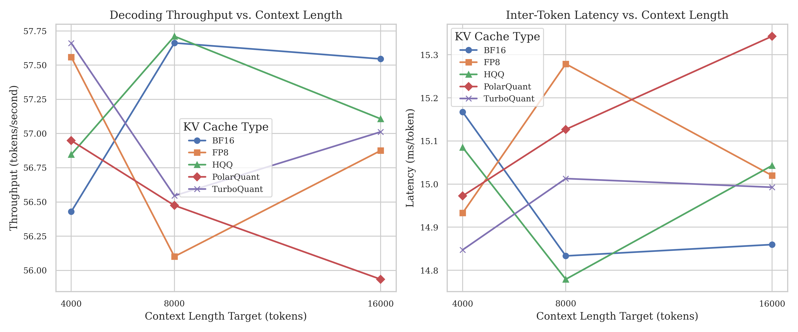

Benchmarking TurboQuant and KV Cache Compression Methods on Vietnamese Large Language Models
Đánh giá sự đánh đổi giữa Peak VRAM, Latency, Throughput và Perplexity của 5 phương pháp nén KV Cache trên các mô hình LLM đa ngữ hỗ trợ tiếng Việt, qua các mốc ngữ cảnh 4k, 8k, và 16k tokens.
Vấn đề: Nút thắt cổ chai KV Cache trên các mô hình LLM tiếng Việt
- KV Cache lưu trữ các ma trận Key và Value của attention, kích thước tăng tuyến tính O(L) theo chiều dài ngữ cảnh L.
- Ngữ cảnh 16k tokens trên mô hình 8B chiếm ~20+ GB VRAM — tiệm cận giới hạn vật lý của GPU RTX 3090/4090 (24 GB).
- Nén bộ nhớ không tối ưu sẽ làm tăng Perplexity (PPL), gây ra hiện tượng lặp từ hoặc sinh văn bản vô nghĩa.
- Diacritics và thanh điệu khiến vocabulary của tokenizer đa ngữ thường bị phân mảnh và có phân phối ngữ cảnh khác tiếng Anh.
- Đặc tính hình thái học khác biệt tạo ra sự phân phối attention khác nhau trên các ma trận KV Cache.
TurboQuant có giúp giảm đáng kể VRAM và cải thiện độ trễ suy luận so với baseline FP16?
Chất lượng đầu ra (Perplexity) thay đổi như thế nào dưới các tỷ lệ nén khác nhau?
Sự đánh đổi giữa phần cứng và chất lượng ngôn ngữ thay đổi ra sao khi ngữ cảnh tăng từ 4k lên 16k?
Phương pháp nào cung cấp ranh giới tối ưu Pareto ổn định nhất cho môi trường triển khai thực tế?
Tổng quan các phương pháp nén KV Cache
Sử dụng định dạng E4M3/E5M2, giảm 2 lần bộ nhớ lưu trữ so với FP16. Tốc độ suy luận tối ưu nhờ sự hỗ trợ phần cứng gốc trên NVIDIA Tensor Cores thế hệ mới.
Tìm kiếm lưới lượng tử hóa tối ưu qua thuật toán giải hồi quy robust mà không cần dữ liệu hiệu chuẩn (calibration data). HQQ hỗ trợ nén xuống 2-8 bit và tích hợp Marlin CUDA kernels.
Hầu hết các nghiên cứu trước đây chỉ đánh giá trên dữ liệu tiếng Anh hoặc dữ liệu tổng hợp. Đề tài này thực hiện đánh giá hệ thống 5 phương pháp nén KV Cache trên dữ liệu tiếng Việt thực tế.
Biến đổi các vector Key sang hệ tọa độ cực (r, θ). Thành phần góc θ được lượng tử hóa với độ chính xác cao hơn do nó đóng vai trò quyết định trong việc tính toán attention score.
Thực hiện lượng tử hóa trực tuyến sử dụng phép chiếu ngẫu nhiên Quantized Johnson-Lindenstrauss (QJL) để chiếu các vector KV vào không gian nén, bảo đảm sai số phục hồi tối ưu.
PagedAttention [Kwon et al. 2023] quản lý bộ nhớ KV Cache dạng trang động để giảm thiểu phân mảnh. KV-CoRE [Chen et al. 2026] phân tích tính nén low-rank tự nhiên của ma trận KV.
Quy trình đánh giá hiệu năng gồm 3 giai đoạn
Lọc và chuẩn hóa bằng NeMo Curator
Đóng gói thành 12 mẫu ngữ cảnh dài
và 507 mẫu đánh giá tác vụ
Đánh giá 5 phương pháp × 3 ngữ cảnh
Theo dõi bộ nhớ GPU qua pynvml
Cài đặt sinh max_new_tokens=128
Đo lường 4 chỉ số chính
Phân tích ranh giới Pareto
Trực quan hóa kết quả
- Nguồn: VTSNLP/vietnamese_curated_dataset (Wikipedia, báo chí, web C4) và VMLU (vmlu_squad_v1, vmlu_mqa_v1.5).
- NeMo Curator: Sửa lỗi Unicode (ftfy) → Chuẩn hóa NFC tiếng Việt → Lọc bỏ ký tự điều khiển → Lọc tiếng Việt diacritical (>=200 ký tự có dấu) → Khử trùng lặp chính xác (SHA-256) → Khử trùng lặp gần đúng (SimHash).
- Mẫu test: 12 mẫu ngữ cảnh dài (4 mẫu cho mỗi mốc 4k, 8k, 16k) + 507 mẫu đánh giá tác vụ. Tokenizer tham chiếu: Qwen/Qwen2.5-7B-Instruct-1M.
Bảo vệ chống OOM: Toàn bộ mã nguồn thực thi được bao bọc trong khối try...except torch.cuda.OutOfMemoryError. Khi xảy ra OOM, hệ thống tự động ghi nhận "OOM" vào CSV và chuyển sang cấu hình tiếp theo mà không gây crash pipeline.
Cấu hình thử nghiệm & Các mô hình
| Thành phần | Thông số / Phiên bản |
|---|---|
| GPU | NVIDIA RTX 3090 / RTX 4090 (24 GB GDDR6X) |
| CUDA | 12.x |
| Python | 3.10 |
| vLLM | >= 0.6.0 |
| PyTorch | >= 2.1.0 |
| NeMo Curator | 1.2.0 (Lọc dữ liệu text) |
| GPU Monitor | pynvml (polling mỗi 50ms) |
Cấu hình quét lưới: 3 mốc ngữ cảnh × 5 phương pháp nén = 45 cấu hình thử nghiệm/mô hình (tương đương hơn 135 runs GPU độc lập).
Bộ nhớ Peak VRAM trên GPU
| Mô hình / Phương pháp | 4k (MB) | 8k (MB) | 16k (MB) |
|---|---|---|---|
| Qwen3-8B — Kết quả VRAM đầy đủ | |||
| FP16 (Baseline) | 70,170 | 70,244 | 71,322 |
| FP8 | 70,604 | 70,870 | 71,756 |
| HQQ | 70,528 | 71,088 | 72,452 |
| PolarQuant | 70,604 | 70,870 | 71,756 |
| TurboQuant | 69,640 | 70,072 | 71,406 |
| Qwen2.5-7B-Instruct | |||
| FP16 (Baseline) | 70,004 | 70,338 | 71,544 |
| FP8 | 70,420 | 70,752 | 71,978 |
| HQQ | 70,188 | 70,688 | 72,090 |
| PolarQuant | 70,532 | 70,808 | 71,978 |
| TurboQuant | 70,040 | 70,356 | 71,564 |
| Mistral-7B-Instruct-v0.3 | |||
| FP16 (Baseline) | 69,270 | 71,844 | --- |
| FP8 | 69,704 | 72,278 | --- |
| HQQ | 70,252 | 72,612 | --- |
| PolarQuant | 69,704 | 72,278 | --- |
| TurboQuant | 69,370 | 71,946 | --- |

Qwen3-8B @4k
lớn nhất ghi nhận
HQQ so với TurboQuant
Latency & Throughput
| Mô hình / Phương pháp | Latency (ms/token) | Throughput (tokens/s) | ||
|---|---|---|---|---|
| 4k | 16k | 4k | 16k | |
| Qwen3-8B | ||||
| FP16 (Baseline) | 8.66 | 18.85 | 115.5 | 53.1 |
| FP8 | 8.78 | 18.80 | 113.9 | 53.2 |
| HQQ | 15.20 | 61.85 | 65.8 | 16.2 |
| PolarQuant | 8.71 | 18.79 | 114.8 | 53.2 |
| TurboQuant | 10.50 | 24.17 | 95.3 | 41.4 |
| Qwen2.5-7B-Instruct | ||||
| FP16 (Baseline) | 7.83 | 15.84 | 127.7 | 63.1 |
| FP8 | 7.94 | 16.01 | 126.0 | 62.5 |
| HQQ | 12.92 | 50.03 | 77.4 | 20.0 |
| PolarQuant | 8.04 | 16.00 | 124.5 | 62.5 |
| TurboQuant | 9.15 | 19.87 | 109.3 | 50.3 |
| Mistral-7B (Chỉ mốc 4k) | ||||
| FP16 (Baseline) | 12.83 | --- | 77.9 | --- |
| HQQ | 29.34 | --- | 34.1 | --- |
| TurboQuant | 15.87 | --- | 63.0 | --- |

📈 performance_vs_context.pngFP8 & PolarQuant: Đạt độ trễ và tốc độ sinh tương đương FP16 baseline nhờ khả năng tăng tốc phần cứng trực tiếp.
TurboQuant: Chịu thêm 1.2–1.8 lần overhead độ trễ ở ngữ cảnh ngắn (4k) do chi phí tính toán QJL online, nhưng hội tụ về gần baseline ở ngữ cảnh dài (16k).
HQQ: Tăng tới 3.3 lần độ trễ suy luận ở ngữ cảnh 16k (Qwen3: 61.85 ms so với 18.85 ms baseline). Phản ánh overhead giải nén trọng lượng lớn trong Attention path.